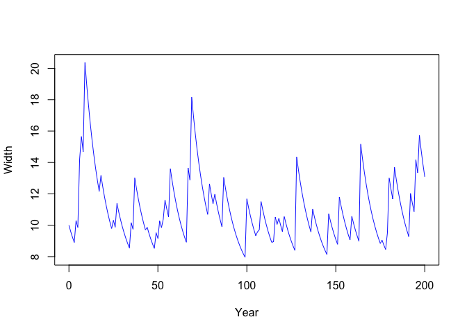

Stochasim tracks river channel width over time as floods widen the channel and non-flood years narrow the channel through revegetation. It iterates the gbem::gbem() algorithm to calculate erosion, and includes a revegetation layer when erosion does not happen.
Installation
As stochasim is not on CRAN yet, you can install the development version of stochasim like so:
remotes::install_github("stochaGBEM/stochasim")If this doesn’t work, you may have to install the remotes package with the command install.packages("remotes").
Example
Loading stochasim also loads the gbem package, so we can start off by making a channel cross section.
(cs <- cross_section(10, grad = 0.01, d50 = 65, d84 = 100, roughness = 0.01))
#> Channel with width 10Find the flow for which erosion begins (also a gbem feature).
(q <- eroding_flow(cs))
#> [1] 15.7588Set up a peak flow distribution that sometimes exceeds this erosive flow. Here’s how often an event exceeds this critical flow (as a proportion):
d_peak <- dst_gev(11, 3, 0.1)
eval_survival(d_peak, at = q)
#> [1] 0.2049773An experimental feature of stochasim is the incorporation of hydrograph distributions: a probability distribution whose outcome space is made up of event hydrographs. Make a rainfall-related hydrograph distribution whose baseflow is fixed, and peak is random with the above GEV; plot one example draw from this distribution.
h <- hydist_rain(d_peak, baseflow = q / 4)
set.seed(23)
plot(h)Run the stochasim algorithm. Plot the evolution of width.

For running two event hydrographs per iteration, use stochasim2(). Here is an example of a snowmelt-related event followed by a rainfall-related event, with revegetation only happening if no erosion occurs with the rainfall-related event.
dst_snow <- hydist_snow(dst_norm(13, 2^2), baseflow = q / 4)
set.seed(43)
rain <- realise(h, n = 200)
snow <- realise(dst_snow, n = 200)
(ss2 <- stochasim2(snow, rain, cross_section = cs, progress = TRUE))
#> Stochasim object with 200 runs.Plot the evolution of width.
plot(ss2)Plot the peak flows.
plot(ss2, what = "flows")
Code of Conduct
Please note that the stochasim project is released with a Contributor Code of Conduct. By contributing to this project, you agree to abide by its terms.